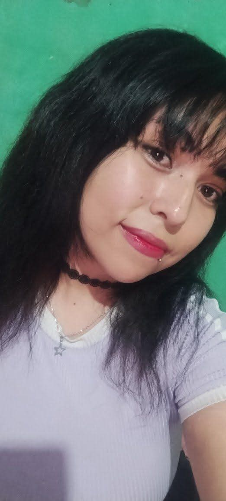

Tu mundo 🌷
Una personita que llegó a significar mucho para mí.
Hay cosas que quiero decirte con calma, y por eso preparé este pequeño espacio
Abrir mi carta ♡Unas palabras que quería dejarte por escrito.
Cati, quería hacerte algo especial porque eres una persona muy importante en mi vida y porque nuestra historia significa mucho para mí.
Me acuerdo de nuestras conversaciones, de las canciones, de las bromas, de las veces que nos acompañamos aunque estuviéramos lejos, me gusta compartir mis días contigo y también conocer los tuyos, incluso en esas pequeñas cosas que parecían simples.
Me gusta mucho los momentos que compartiste conmigo, las risas, las conversaciones y todo lo que me permitiste conocer de ti.
Y quiero que sepas que yo todavía quiero muchas cosas contigo, Cati. Quiero seguir compartiendo mis días contigo, conocer más de ti, escucharte hablar de cualquier cosita, verte feliz y estar para ti cuando necesites a alguien. Quiero que algún día podamos dejar de contar los kilómetros que nos separan y podamos abrazarnos, tomarnos de la manito y vivir todos esos momentos que tantas veces imaginamos. Quiero seguir construyendo nuestra historia y demostrarte con hechos lo mucho que significas para mí.
No quiero que lo nuestro se quede solamente en recuerdos bonitos, porque sinceramente yo todavía tengo muchas ganas de vivir más cosas contigo 💕
Con cariño y amor,
tu osito 🧸
No tenemos una foto juntos, pero sí recuerdos y momentos que cada uno guarda desde su lugar.

Una personita que llegó a significar mucho para mí.

Desde aquí también guardo con cariño nuestra historia.
Estábamos en países diferentes, pero encontramos formas de compartir tiempo, acompañarnos y amarnos
A veces la distancia se hacía difícil, pero me gustaba cuando una llamada o un mensaje hacía que el día se sintiera un poquito más cercano
Algunas cosas sencillas que hacen especial nuestra historia
Los mensajes, las bromas y esas conversaciones que quiero seguir teniendo
Melodías que me hacen recordar momentos y sentimientos, especialmente la primera canción "Catorce"
Cuando nos quedabamos horas y horas hablando o viendo videos jeje
Me hace ilusión poder viajar a Argentina, conocerte en persona, abrazarte, compartir un día normal contigo y conocer a las personas importantes de tu vida
También imagino muchos momentos sencillos como caminar juntos, reírnos por cualquier cosa, conocer lugares nuevos y crear recuerdos que esta vez sí pudiéramos guardar en fotografías juntos
Tambien uno de mis sueños es casarme contigo, ser una linda pareja de esposos y formar una hermosa familia juntos ❤️
También preparé un video para decirte algunas cosas personalmente
Después de todo lo que te dije, quiero ser honesto, todavía siento mucho amor por ti y todavia quiero seguir construyendo nuestra relación. Quiero estar junto a ti en las buenas y malas y apoyarte siempre